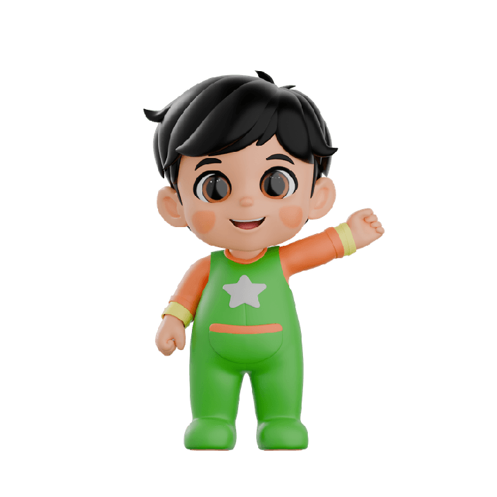

Cerita di baliknya
Dibuat seorang Abi untuk anaknya
Baby Mo Hijaiyah awalnya dibuat untuk satu anak: Ibra. Abinya ingin Ibra belajar membaca Al-Qur'an dengan cara yang membuatnya tersenyum — bukan dipaksa. Setiap game diuji dengan satu pertanyaan: apakah Ibra mau main lagi besok?

